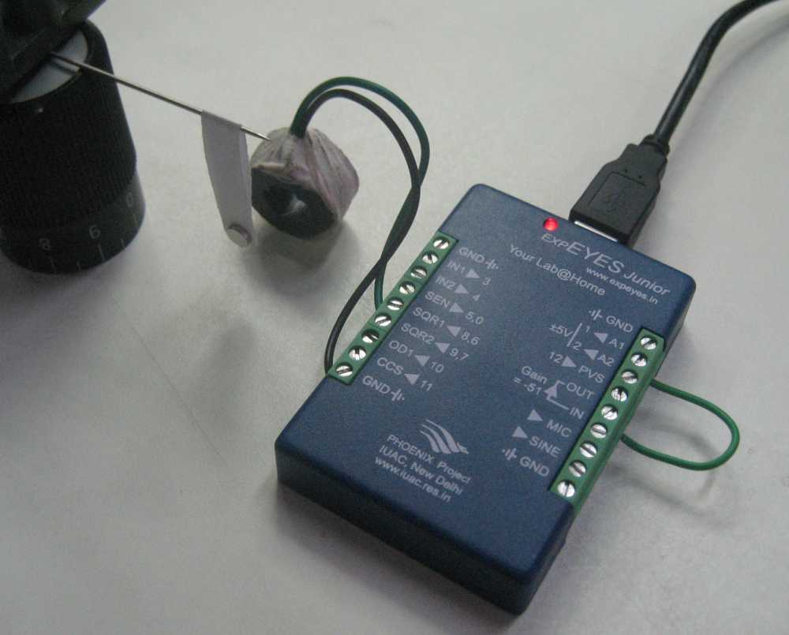

Pushing a a swing in tune with its natural resonant frequency will make it go higher, ie. maximum amplitude. A pendulum is made using a permanent magnet suspended on a peice of paper and the pusing is done by a coil powered from SQR1. One end of a folded paper is held between two button magnets. The distance from the center of the magnet to the point of suspension is taken as its length.
